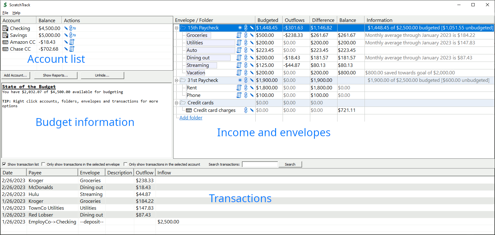
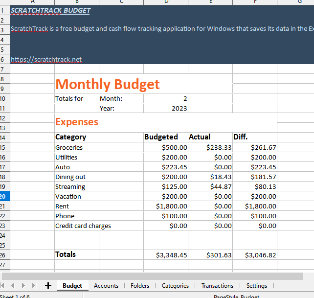

|
ScratchTrack 0.5
Note: The Windows Defender's SmartScreen feature may warn you that ScratchTrack is unrecognized. Each release of ScratchTrack is submitted to the Microsoft threat research team for analysis to remove this warning but turn around time is 24-48 hours. This warning is harmless. If you're uncomfortable with proceeding, wait a day. The warning will go away. Every release of ScratchTrack is digitally signed and scanned at VirusTotal. Installation: ScratchTrack is a single file and there is no installer. Just copy it to your local machine and run it. If you’d like to add it to your start menu, right click it and select “Pin to Start”. ProTip: Copy ScratchTrack to your OneDrive / DropBox / GoogleDrive folder and work from any of your synced computers. Scratch Track features
 ScratchTrack's native file format is xlsx ScratchTrack saves to a single xlsx file. If you want to view your data in a different way, just open it in Excel, Google Sheets, Open Office, etcetera. The main sheet is a budget overview, and all the pertinent data can be found on secondary sheets.  New in 0.5.23.62 Minor UI tweaks New in 0.5.23.60 Fixed font scaling logic to handle displays where the font is already scaled up by windows settings Fixed a display issue in the transactions list involving negative expenses (refunds) Fixed the "transfer edit" dialog to properly set the "to" account when editing a transfer New in 0.5.23.57 Savings Goals! Envelopes can be assigned target balanaces to help plan for long term expenses such as down payments and vacations. Sparklines (mini bar charts) in the treeview show remaining balanace / progress towards savings goals Average monthly spending information is displayed in the tree. Use this to track the accuracy of the budgeted amount set for envelopes. First stab at reporting. These reports won't win any beauty contests (yet). But it's a start! New in 0.5.23.54 Use consistent terminology throughout ScratchTrack. What was "categories" or "expense categories" is now "envelopes". ScratchTrack is an envelope budgeting app. Embrace it! New in 0.5.23.51 Switch XLSX file format First stab at QIF import ScratchTrack Message Boards Found a bug? Have a feature idea? File it here |